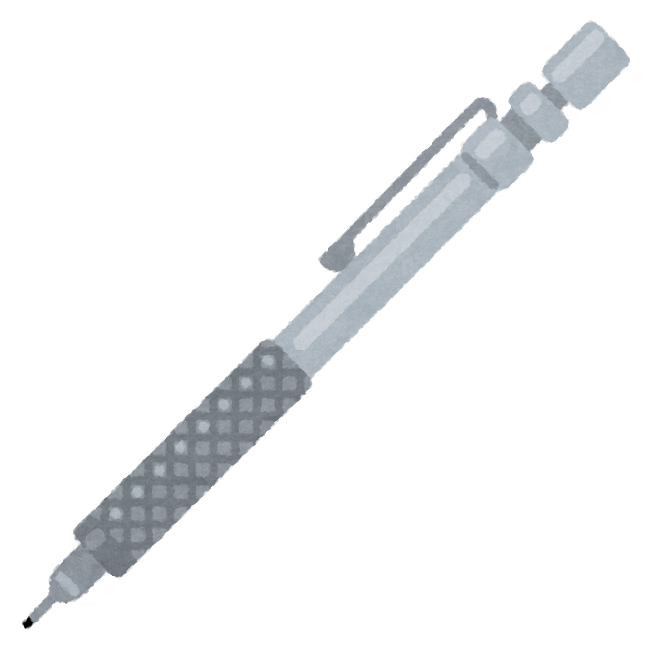

これはシャーペン（シャープペンシル）です。
細い黒鉛の芯を繰り出して用いる機械式筆記具である。
「シャープペンシル」の語源は、1837年頃にアメリカで発売された世界最初の実用シャープペンシルの商標 Eversharp だと言われている。
Eversharpが販売されていたアメリカでは、日本でシャープペンシルという呼称が一般化する以前から「Eversharp Pencil（エバーシャープ・ペンシル）」という呼び名があった。
明治時代に日本にシャープペンシルが入り「繰り出し鉛筆」と呼ばれていたものが、大正時代に「エバー・レディ・シャープ・ペンシル」という商標の商品が発売されて以降、シャープペンシルという呼称が一般化していった。
「エバー・レディ・シャープ・ペンシル」は電機メーカーシャープの社名の語源になっている。